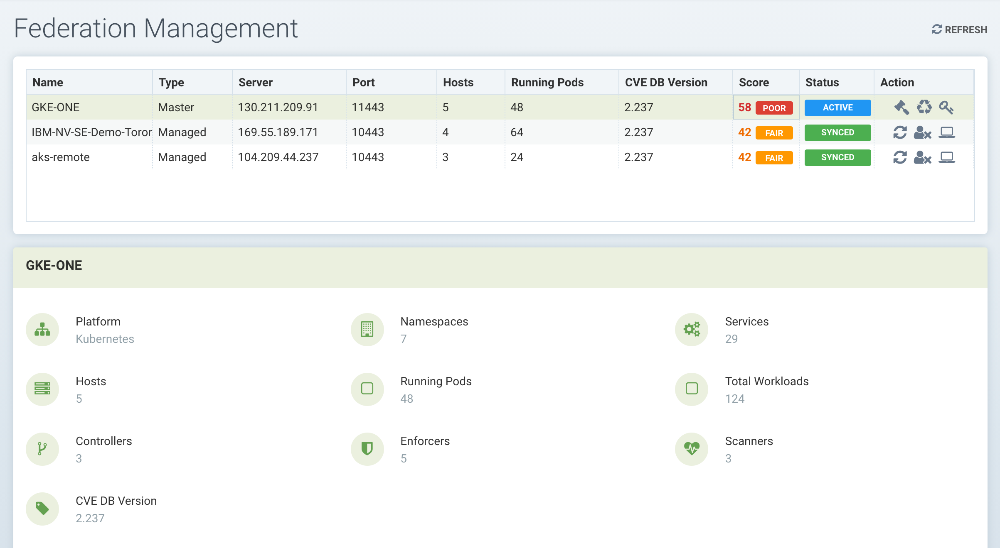
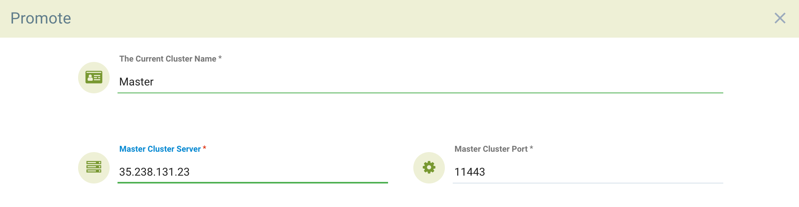
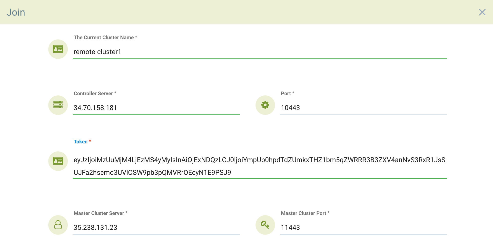
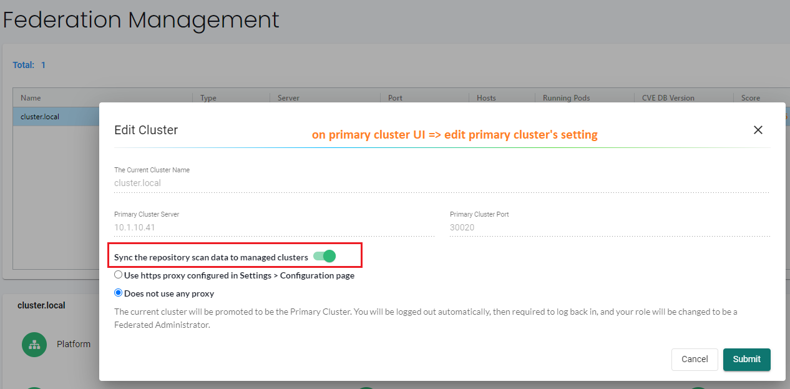

Enterprise Multi-Cluster Management
Enterprise-Konsole
Die SUSE® Security Konsole kann verwendet werden, um große Multi-Cluster- und Multi-Cloud-Implementierungen in Unternehmen zu verwalten. Ein Cluster sollte als primärer Cluster ausgewählt werden, und andere Remote-Cluster können dann dem Primärcluster beitreten. Sobald die Verbindung hergestellt ist, kann der primäre Cluster föderierte Regeln an jeden Remote-Cluster weitergeben, die in den Konsolen jedes Remote-Clusters als föderierte Regeln angezeigt werden. Gescannten föderierten Registries synchronisieren außerdem die Scanergebnisse mit den Remote-Clustern. Nur lokale Benutzer und Rancher-Benutzer mit Administratorberechtigung können einen Cluster zum primären Cluster befördern.
Neben der föderierten Richtlinie unterstützt das Multi-Cluster-Management die Überwachung jedes Remote-Clusters auf einer Zusammenfassungsseite, wie unten gezeigt.

Es MUSS eine Netzwerkverbindung zwischen den Controllern in jedem Cluster über die erforderlichen Ports bestehen. Der Controller wird extern zu seinem Cluster entweder durch einen primären oder einen Remote-Dienst exponiert, wie im Beispiel SUSE® Security Implementierungs-YAML-Dokument zu sehen ist.
Konfiguration des primären und der Remote-Cluster
Melden Sie sich bei der Konsole des Clusters an, der der primäre Cluster sein wird. Wählen Sie im Dropdown-Menü oben rechts "Multiple Clusters" aus und dann "Befördern", um den Primärcluster zu konfigurieren. Hinweis: Nur lokale Benutzer und Rancher-Benutzer mit Administratorberechtigung können einen Cluster zum primären Cluster befördern. Derzeit dürfen SSO/LDAP/OIDC-Benutzer mit Administratorrolle keinen Cluster zum primären Cluster befördern.

Geben Sie die öffentliche IP-Adresse und den Port des fed-master-Dienstes ein. Sie können dies herausfinden, indem Sie
kubectl get svc -n neuvectorDie Ausgabe wird folgendermaßen aussehen:
NAME TYPE CLUSTER-IP EXTERNAL-IP PORT(S) AGE
neuvector-service-controller-fed-master LoadBalancer 10.27.249.147 35.238.131.23 11443:31878/TCP 17d
neuvector-service-controller-fed-worker LoadBalancer 10.27.251.1 35.226.199.111 10443:32736/TCP 17dIm obigen Beispiel ist der Hostname/IP des primären Controllers 35.238.131.23 und der Port ist 11443. Hinweis: Stellen Sie sicher, dass diese IP-Adresse und der Port extern zugänglich sind (von den entfernten Clustern). Hinweis: Die Systemuhren (Zeit) müssen für jeden primären und entfernten Cluster gleich sein, um ordnungsgemäß zu funktionieren.
Nachdem Sie sich wieder in die Konsole eingeloggt haben, wählen Sie erneut "Multiple Clusters" aus dem Menü oben rechts und klicken Sie auf das Symbol, um ein Token zu generieren, das benötigt wird, um die entfernten Cluster zu verbinden. Kopieren Sie das Token für den nächsten Schritt. Das Token ist etwa 1 Stunde gültig und muss, wenn es abgelaufen ist, erneut generiert werden, um zukünftige entfernte Cluster zu verbinden.

Um einen entfernten Cluster mit dem primären zu verbinden, melden Sie sich als Administrator in der Konsole des entfernten Clusters an. Wählen Sie "Multiple Clusters" aus dem Dropdown-Menü oben rechts und klicken Sie auf "Join". Geben Sie die Controller-IP oder den Hostnamen für den entfernten Cluster sowie den Port ein. Sie können diese Informationen erneut vom entfernten Cluster abrufen, indem Sie Folgendes tun:
kubectl get svc -n neuvectorVerwenden Sie die Ausgabe des fed-worker des entfernten Clusters, um die IP-Adresse und den Port zu konfigurieren. Geben Sie dann das vom primären kopierte Token ein. Beachten Sie, dass nach der Eingabe des Token die IP-Adresse und der Port für den primären Cluster automatisch ausgefüllt werden, dies kann jedoch bearbeitet oder manuell eingegeben werden.

Melden Sie sich vom entfernten Cluster ab und wieder im primären an. Oder wenn Sie bereits angemeldet sind, klicken Sie auf "Aktualisieren" und der entfernte Cluster wird im Menü "Multiple Clusters" aufgeführt.

Sie können auf das Verwaltungssymbol in der Liste klicken oder das Dropdown-Menü für mehrere Cluster oben verwenden, um jederzeit zwischen Clustern zu wechseln. Sobald Sie zu einem entfernten Cluster gewechselt haben, gelten alle Menüelemente links jetzt für den entfernten Cluster.
Fehlerbehebung
Um sicherzustellen, dass die Dienste wie erwartet reagieren, können Sie die Tests von außerhalb der Cluster oder, falls erforderlich, von den Test-Pods in den Clustern fed-master und fed-managed durchführen, um sicherzustellen, dass die Netzwerkverbindung zwischen den Clustern erlaubt ist.
Überprüfen Sie den fed-master-Dienst
Der Cluster-Dienstport 11443 ist nur nach Aktivierung des Dienstes fed-master zugänglich. Der folgende Befehl gibt einen Fehlercode zurück, wenn der Dienst fed-master antwortet, um anzuzeigen, dass die angeforderte Ressource nicht verfügbar ist.
{"code":1,"error":"URL not found","message":"URL not found"}|
Die URL für den Befehl |
curl -v https://<fed-master>[:<port>]/v1/eulaÜberprüfen Sie den fed-managed-Dienst
Der Cluster-Dienstport 10443 wird zwischen REST API und dem Dienst fed-managed geteilt. Der folgende Befehl gibt einen Erfolgscode zurück, wenn der Dienst fed-managed antwortet, um anzuzeigen, dass er verfügbar ist.
{"eula":{"accepted":true}})|
Die URL für den Befehl |
curl -v https://<fed-managed>[:<port>]/v1/eulaFöderierte Richtlinie
Bitte sehen Sie im Abschnitt zur föderierten Richtlinie → nach, um Anweisungen zur Erstellung von föderierten Regeln zu erhalten, die in jeden Cluster übertragen werden.
Föderierte Registries für verteilte Ergebnisse der Bildscans
Der primäre (Master-)Cluster kann ein als föderierte Registry bezeichnetes Repository scannen. Die Scan-Ergebnisse aus diesen Registries werden mit allen verwalteten (Remote-)Clustern synchronisiert. Dies ermöglicht die Anzeige der Scan-Ergebnisse in der Konsole des verwalteten Clusters sowie die Verwendung der Ergebnisse in den Zulassungssteuerungsregeln des verwalteten Clusters. Registries müssen nur einmal gescannt werden, anstatt von jedem Cluster, wodurch die CPU-, Speicher- und Netzwerkbandbreitennutzung reduziert wird.
Föderierte Registries können nur von einem föderierten Administrator im primären Cluster in Assets → Registries konfiguriert werden. Nach dem Hinzufügen und Scannen eines föderierten Repositories werden die Scan-Ergebnisse mit allen verwalteten Clustern synchronisiert. Zulassungssteuerungsregeln in jedem verwalteten Cluster, die Bildscans erfordern (z. B. CVE, compliance-basierte Regeln), verwenden automatisch sowohl die Scan-Ergebnisse der föderierten Registries als auch die der lokal konfigurierten Registries.
Föderierung von Ergebnissen aus CI/CD-Scannern (Optional)
Die Scan-Ergebnisse der föderierten Registries werden immer mit den verwalteten Clustern synchronisiert, wie oben beschrieben. Der primäre Cluster kann auch Scan-Ergebnisse von eigenständigen Scanner-Scans oder Scanner-Plugins, die aus einer Build-CI/CD-Pipeline aufgerufen werden, empfangen. Um die Ergebnisse des Repository-Scans in der Build-Phase (CI/CD) ebenfalls mit den verwalteten Clustern zu synchronisieren, aktivieren Sie dies zunächst, indem Sie die Einstellungen des primären (Master-)Clusters wie unten gezeigt bearbeiten.

